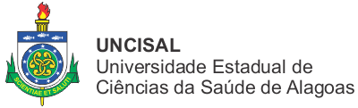
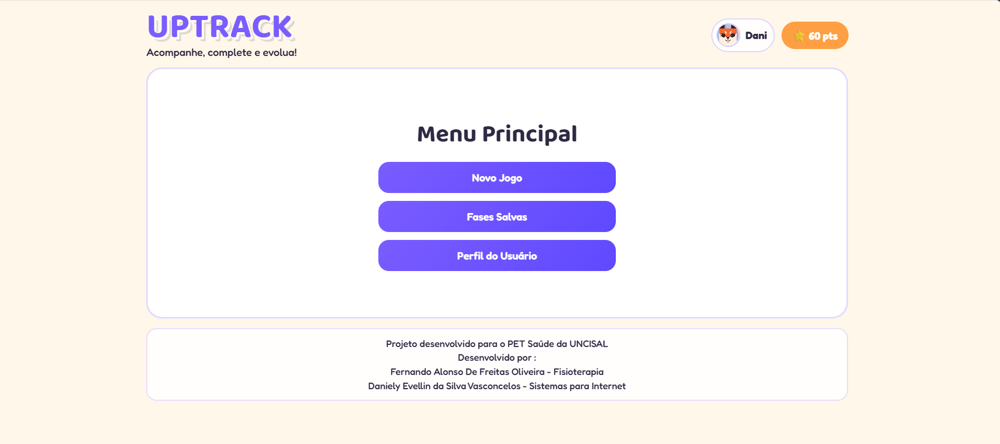

PET SAÚDE DIGITAL - CER III
Inovação e tecnologia a serviço da saúde pública




Inovação e tecnologia a serviço da saúde pública

Estes projetos foram desenvolvidos como parte do Programa de Educação pelo Trabalho para a Saúde (PET-Saúde) focado em Saúde Digital, implementado pela Universidade do Estado de Alagoas (UNCISAL) em parceria com o Sistema Único de Saúde (SUS).
O programa visa integrar ensino, serviços de saúde e comunidade, aprimorando a formação de estudantes e profissionais de saúde com ênfase nas tecnologias de informação e comunicação para fortalecer o SUS.

Plataforma dedicada ao bem-estar dos cuidadores de saúde.

Ferramenta interativa para estimulação precoce infantil.

Jornada educativa sobre saúde e bem-estar.

Técnicas e recursos para gerenciamento emocional.

Material educativo para orientação parental.

Recursos para o autocuidado de profissionais de saúde.

Gamificação, Tecnologia Assistiva e Estrutura Adaptativa.
Gamificação, Tecnologia Assistiva e Estrutura Adaptativa.>